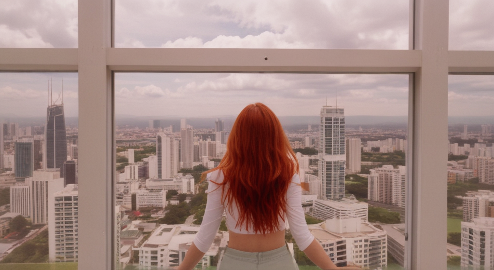

Más imágenes

Creación de identidad digital, narrativa visual y mundo ficticio; explorando los límites de la imagen generada.
Trabajo Final de Grado centrado en la creación de una influencer virtual, Tania Costa, y su entorno: la ciudad ficticia de Kernel, dentro de una estética solarpunk.
El reto principal era conseguir consistencia visual en un momento en el que la generación de imagen y vídeo con IA todavía era inestable y poco predecible.

El proyecto se construyó utilizando herramientas open source como ComfyUI y modelos basados en Stable Diffusion, trabajando con distintas variantes, checkpoints y LoRAs para definir tanto el personaje como su entorno.
Uno de los puntos clave fue desarrollar un sistema de trabajo que permitiera mantener coherencia entre imágenes: controlando prompts, semillas, referencias visuales y entrenando estilos específicos para Tania Costa.
En lugar de buscar resultados aislados, el enfoque fue crear un flujo reproducible. Esto implicó pruebas constantes, iteración y ajuste fino de parámetros hasta conseguir que el personaje mantuviera identidad entre distintas escenas, poses y contextos.
La ciudad de Kernel se planteó como un espacio coherente dentro del universo visual, explorando una estética solarpunk que combinara tecnología y sostenibilidad, alejándose de los imaginarios más distópicos habituales.
Uno de los principales problemas fue la inconsistencia facial y corporal típica de estos modelos en ese momento. Se resolvió combinando LoRAs específicos, control de composición y postproducción en Photoshop para corregir pequeños errores sin perder naturalidad.
El proyecto no solo busca un resultado visual, sino entender hasta qué punto estas herramientas pueden utilizarse para construir identidades digitales creíbles.